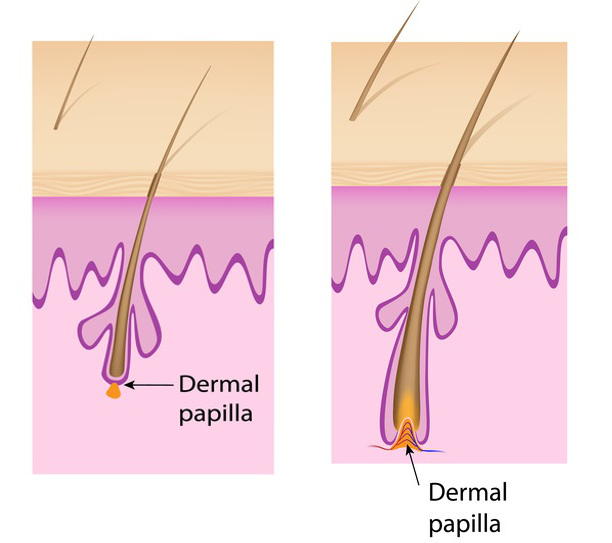

Cercetătorul Mark McCullough
a descoperit metoda
pentru îndesirea părului
Datorită metodei noi, fiecare are șansa de a opri căderea părului și de a-și îndesi podoaba capilară. Gata cu părul subțire, slab și rar - spune Mark McCullough - șeful cercetătorilor de la Institutul de Igienă și Frumusețe din Zurich.
Oprirea căderii părului și îndesirea acestuia este posibil de realizat. Acest lucru nu este o iluzie - este concluzia rezultată din testele științifice. Fiecare test a confirmat faptul că, folosind tratamentul complet nedureros și sigur pentru sănătate se poate:
-
stagna căderea părului - efect în 12 zile sau mai puțin,
-
accelera creșterea părului nou și de a îndesi podoaba capilară
-
reface și îmbunătăți condiția părului, astfel încât să fie sănătos, puternic și strălucitor,
"Indiferent că problemele cu părul te necăjesc de vreo 20 de ani sau abia de ieri" - confirmă Mark McCullough. "Indiferent că îți dorești să oprești căderea părului sau pur și simplu să îmbunătățești aspectul acestuia. Fără diferență că slăbirea firului de păr rezultă din lipsă de vitamine în dietă, stres, boli, tulburări hormonale sau din altă cauză. Căderea și slăbirea părului poate fi învinsă!"
Nu da crezare celor care îți spun să trăiești mai departe cu această problemă. Dacă dorești, îți voi arăta o metodă care îți va întări părul, va stagna căderea acestuia și va accelera creșterea noilor fire de păr, mult mai puternice. Efectele acestui tratament sună ca o recuperare miraculoasă, dar...
fiecare efect este confirmat prin pozele prezentate și prin rezultatele analizelor la nivelul pielii capului
"Când am arătat tricologilor (specialiștilor în îngrijirea părului și în bolile de păr) pozele cu efectele tratamentului - au fost șocați. Firele subțiri de păr au dispărut, iar în locul acestora au apărut fire noi, puternice. Totodată, s-a prelungit faza anagenă de creștere (în timpul căreia părul crește mai intens), iar structura părului deteriorat s-a regenerat 100%. De asemenea, s-a îmbunătățit condiția învelișului de colagen - structura situată în jurul fiecărei rădăcini de păr responsabilă de "ancorarea" părului în scalp- continuă Mark McCullough.
"Tricologii nu-și puteau reveni din uimire, când au văzut imaginile cu analiza scalpului, înainte și după tratament - continuă Mark McCullough. "În aceste imagini se vede exact cum s-a întărit structura părului. Foliculii de păr și învelișul de colagen au fost regenerate, s-a îmbunătățit condiția și circulația sanguină la nivelul scalpului. Pe lângă toate acestea, studiul a arătat că s-a mărit în mod semnificativ capacitatea foliculilor de păr pentru regenerare și producerii noului țesut, ceea ce duce la accelerarea creșterii părului nou".
ÎNAINTE
DUPĂ
O regenerare mai bună și o fixare mai puternică a foliculilor de păr previne căderea părului și accelerează creșterea acestuia.
Ce au descoperit cercetătorii din Zurich?
"Natura vrea ca organismul tau să funcționeze perfect" - explică McCullough.
"Organismul nostru este capabil să facă față cu creșterea oaselor, vindecarea rănilor. De asemenea, este capabil de a regenera organele, sau chiar de a elimina în mod eficient celulele canceroase. Regenerarea foliculilor de păr și stimularea creșterii părului nu este o excepție, cu condiția să lăsăm natura să-și facă datoria.
Dezlănțuie puterea naturii!
"Cea mai puternică soluție creată vreodată de mama natură" - explică McCullough. "Un exemplu perfect este penicilina - acest antibiotic uimitor reduce mortalitatea cauzată de infecțiile bacteriene cu peste 90%! Penicilina nu a fost creată în laboratoare. Această substanță a fost creată de o ciupercă foarte des întâlnită. Este cunoscută tuturor ca mucegai. Același lucru este valabil și în cazul căderii părului - omul nu a inventat o modalitate pentru consolidarea eficientă a părului. Cu toate acestea, o poate găsi în natură. Echipa mea a urmat acești pași.
După luni de testare, am descoperit un amestec uimitor de substanțe, care modifică organismul într-o mașină de regenerare a părului. Nu doar întărește structura firului de păr, dar totodată ajută la fixarea rădăcinilor în bulbi și începe procesul de auto-regenerare a părului. În acest fel, elimină problemele legate de păr la fel de eficient ca și penicilina bacteriile."
Cercetătorii au introdus amestecul într-un special preparat HairPerfecta - Este cea mai puternică armă împotriva căderii părului pe care a creat-o mama natură.
Doamna Anișoara Dragomir
Problemele mele cu părul au apărut acum 2,5 ani, la 2 luni după nașterea primului meu copil. Până în acel moment, am vizitat: 3 dermatologi, 2 endocrinologi și nenumărate saloane de cosmetică și coafură. Am făcut teste pentru hormoni și pentru scalp. Rezultatul - un an de plimbare pe la specialiști, iar tratamentele recomandate nu m-au ajutat în nici un fel...
După 2 săptămâni de folosire a acestui preparat, căderea părului s-a micșorat semnificativ și m-au oprit de a mă gândi la asta tot timpul. Am simțit din nou că sunt atrăgătoare și arăt de vârsta mea, și nu cu 10 mai în vârstă. Zâmbeam, mă întâlneam cu prietenii și am încetat să mă preocupe aspectul părului. După o lună, părul a încetat complet de a mai cădea, devenind mai bogat ca niciodată înainte. Am scăpat atât de brusc de problemele cu părul, încât multe persoane nu puteau să creadă că este părul meu natural și nu îndesat în mod artificial. Mă simt incredibil de bine!
Pentru a opri căderea părului și de a-l consolida, pacienții au urmat terapia inovatoare. De-a lungul duratei acesteia, pacienții au folosit preparatul HairPerfecta doar de doar de 2 ori pe zi.
McCullough asigură că:
"După utilizarea noului tratament, te poți aștepta ca părul tău să se întărească chiar din prima zi. Nu va trebui să utilizezi substanțe chimice nocive, nu vei aștepta pentru vizite la specialiști...
După câteva zile, problemele cu părul fragil și căderea acestuia vor dispărea. Nu va trebui să eviți uscarea, nici de a folosi produse cosmetice speciale. Vei înceta să trăiești în stres din cauza căderii părului. Și cu toate acestea, nu este totul - după terminarea tratamentului, vei observa o creștere semnificativă a părului nou, iar părul tău va fi cu până la 67% mai des. Vei avea un păr frumos și bogat, de o culoare sănătoasă și strălucitoare."
HairPerfecta nu este popular doar în Europa. De asemenea, este folosit de către persoanele din USA și Canada, care luptă cu părul subțire și rar.
Preparatul HairPerfecta a fost analizat cu atenție de către experții independenți și eficiența sa a fost confirmată în raportul publicat pe paginile SRIT (Institutul Elvețian de Cercetări Trihologice). În România este o noutate. Poate fi achiziționat numai prin intermediul internetului – prin alăturarea în cadrul clubului de reduceri. Mai multe despre acțiunea preparatului poți citi aici .
Iată promoția specială pentru Cititorii portalului nostru: accesând link-ul de mai jos, poți obține HairPerfecta, pentru participarea în cadrul clubului de reduceri, la un discount de 50%. Oferta specială va fi valabilă până la 01-04-2022.
Apasă aici pentru a obține HairPerfecta și să scapi de problemele firelor de păr slabe
Promoție specială până

~d-na_mary • , 12:59:58 Răspunde
A incercat cineva?~ANDREI • , 13:51:39 Răspunde
Buna. AM niste vartecujuri goale ingrozitoare, chelesc tot mai rau si ma enerveaza asta groaznic. Dati niste informatii despre cum pot optine un par mai des la barbati.~cineva1985 • , 14:13:20 Răspunde
Eu am folosit deja cateva preparate si putin parul a devenit mai puternic si nu mai cadea asa de tare. Aici chiar ca face minuni, sau ca poate este mai bun. Sigur la aceste produse este nevoie si de ingrijirea parului~victor • , 14:53:42 Răspunde
Cred ca este asa ca atunci cand folosesti Duo Oil cel mai bine e sa-ti imbunatatesti dieta, sa mananci mai multe vitamine si efectul este posibil de obtinut. personal nu am folosit.blair • , 20:35:01 Răspunde
Am un păr distrus, în fiecare dimineață îl strâng de pe pernă, singure știți – vopsirea, îndreptarea, îngrijirea incorectă. A fost eficient pentru cineva? Să scrie oricine are idee despre acest preparat, dar ai bine cine l-a folosit.~calina-mica • , 10:56:42 Răspunde
Dupa titlu ma asteptam din nou sa vad o formula secreta ieftina din hollywod, dar incolo vad niste ingrediente naturale, destul de interesant, a incercat cineva?~Domnica3 • , 13:18:23 Răspunde
AU ADUS REZULTATE IN CAZUL MAMEI MELE ASA CA FIECARE FEMEIE LE VA OBTINE, MAMA ASA SI-A INTARIT PARUL INCAT ACEST NU MAI CADE IAR ACUM AU INCEPUT SA CREASCA NOI FIRE, FARA MASTI SCUMPE SAU SFATURI PROSTESTI:dr_ka • , 15:40:04 Răspunde
Hai sa spun si eu doua vorbe. Nu demult am avut seminarii despre aceste ingrediente, si se pare ca aceste ingrediente ajuta la intarirea firelor de par de la radacina, hranesc corespunzator firele deteriorate. In multe cazuri firele incep sa creasca din nou. Bineinteles ca importanta este si ingrijirea pielii capului.C_A_L_I_A • , 13:01:45 Răspunde
CEVA CONCRET OAMENI BUNI. ÎMI PIERD PĂRUL CU DROAIELE ȘI CAUT O REZOLVARE EFICIENTĂ. POATE SPUNE CINEVA CINE A ÎNCERCAT CEVA CONCRET DESPRE ACEST PRODUS?~Magda • luni 26.03.2022, 14:23:26 Răspunde
Iau acest ulei de cateva zile si pot spune ca firele de par sunt mai dese si mai delicate la atingere. Mai putin decat promit dar sunt multumita.~d-na_mary • , 11:45:07 Răspunde
Pe pagina lor scrie de garantia satisfactiei. Stiti daca e adevarat? Cu adevarat parul inceteaza sa mai cada? Nu imi place sa cumpar la nimereala, nu am bani de aruntat in stanga si in dreapta. Trebuie sa am garantia ca daca platesc, parul o sa fie ca nou. Am dat deja destul pentru intarirea lui...~Elvis_eu • , 13:06:48 Răspunde
Din pacate nu ma pot lauda cu efecte de lunga durata, deoarece urmez tratamentul de abia de o saptamana, dar nu veti crede, in primele 7 zile firele nu-mi mai cad! Ei bine in sfarsit arat ca un barbat :)~Blonda • , 16:28:29 Răspunde
Eu folosesc regulat HairPerfecta. Am inceput de la un flacon. Firele de par sunt din ce in ce mai frumoase, se electrizeaza mai putin, chiar stralucesc putin. Parerea mea, cel mai bun produs pentru caderea parului pe care l-am folosit vreodata. Nici un fel de efecte secundare. In plus pot spune ca nu m-am folosit de preparate sau operatii scumpe. Recomand tuturor.~Tristan • , 18:18:59 Răspunde
Am auzit ca in cazul caderii parului cel mai important este dieta, dar poate ca merita de incercat ceva direct pe par, poate are ceva?~kris79 • , 21:32:11 Răspunde
De asemenea am folosit uleiul prezentat mai sus. Totul conform promisiunilor producatorului. Inainte timp de un an de zile imi cadea parul, si pot spune ca am incercat de toate. Apoi am citit un material despre acest HairPerfecta. Îl aplicam zilnic si in plus am inceput sa-mi vopsesc parul din ce in ce mai rar si am pus deoparte diferite aparate pentru indreptarea parului. Astazi ma pot lauda cu un par frumos si sexi!~vist • , 11:50:10 Răspunde
Ma gandesc la achizitionarea acestui produs pentru sotul mea de aceea am o intrebare scurta pentru barbati. Nu as vrea ca sotul se supere pe mine si sa creada ca nu-mi mai place de el. Se poate supara? nu cred~domnica_hihi • , 12:11:51 Răspunde
Daca vei face cu cap atunci nu ar trebui sa se supere.~multumita • , 13:33:32 Răspunde
Imi permit sa ma bag si eu putin in discutie. Sotia mea de 44 de ani datorita acestor ingrediente naturale nu se mai simte deprimata, sau jenata (din pacate pierdea mult par). Astazi se simte mai femeie si este mai fericita, in plus la fel am inceput sa folosesc~zambet • , 16:55:13 Răspunde
Fetelor, va mai mirati ca va cade parul? Daca le indopati cu diferite chimicale atunci cum credeti ca ar trebui sa fie. Incepeti prin a arunca toate produsele chimice si folositi cosmetice naturale, fara parabeni si veti vedea care vor fi efectele. Tot nu fac parte din grupa de persoane care au un par foarte frumos si eu am avut probleme cu caderea acestuia, dar dupa ce am inceput sa folosesc acest ulei natural am scapat de firele de par de pe podeaua din baie, dupa uscare, pieptanat.~Carolina_P • , 17:16:54 Răspunde
Salut, am 29 de ani, de 2-3 ani am avut un păr mai rar, in plus parul meu se ingrasa (eram nevoita sa ma spal aproape zilnic), firele de par erau foarte subtiri, iar bulbii practic invizibili (ma uitam la firele ce cadeau). Nu cred ca e o chestiune genetica, deoarce inainte aveam un par foarte lung si gros. In urma acestor uleiuri firele au incetat sa mai cada. Nu-mi mai vopsesc parul si incerc sa mananc sanatos~ecou • , 12:38:35 Răspunde
CRED CA MA DECID. ACOLO PE PAGINA LOR SE AFLA GARANTIA SATISFACTIEI. CU ADEVARAT ASA ESTE? NU VREAU SA RISC. VA ROG SA RASPUNDETI REPEDE PENTRU CA NU AM TIMP. TREBUIE IN 3 SAPTAMANI SA ARAT BINE PENTRU CA AM NUNTA IN FAMILIE~oanaaaa • , 17:00:16 Răspunde
Apasati aici pe reclama si cititi. Garanteaza satisfactia, de ce ar minti? Totul este in regulament.~kitki • , 09:51:33 Răspunde
Pe mine nu ma conving astfel de lucruri. Vrei sa ai un par frumos? Incepe prin a folosi sampoane bune, piapta-te inainte de somn si hai sa fim seriosi mai mergeti pe la saloane!!!~Emilia • , 10:23:11 Răspunde
CINEVA SĂ RĂSPUNDA!!!!VA ROOOOGGG~Victor • , 09:51:33 Răspunde
Ok, aștept livrarea. Voi da informații aici peste puțin timp despre efecte.